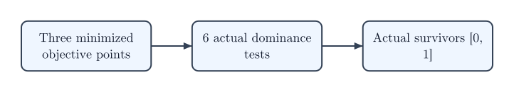
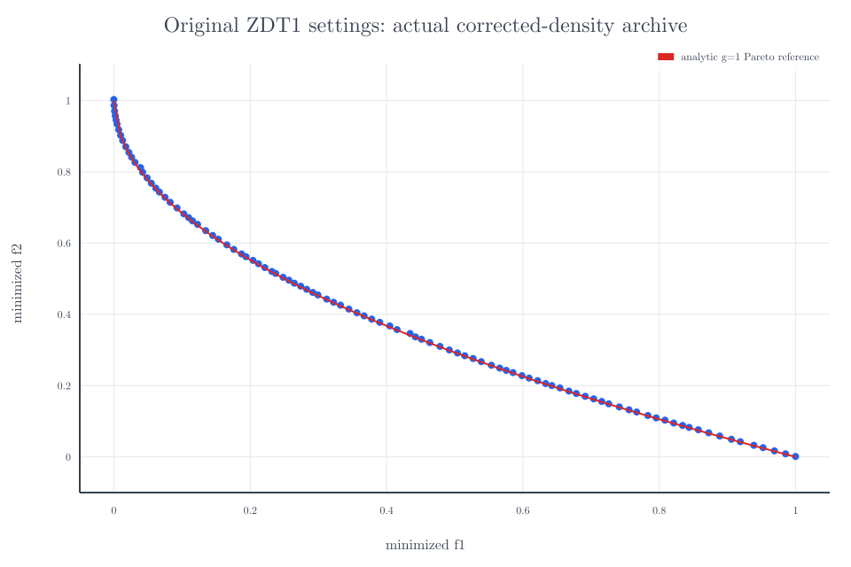
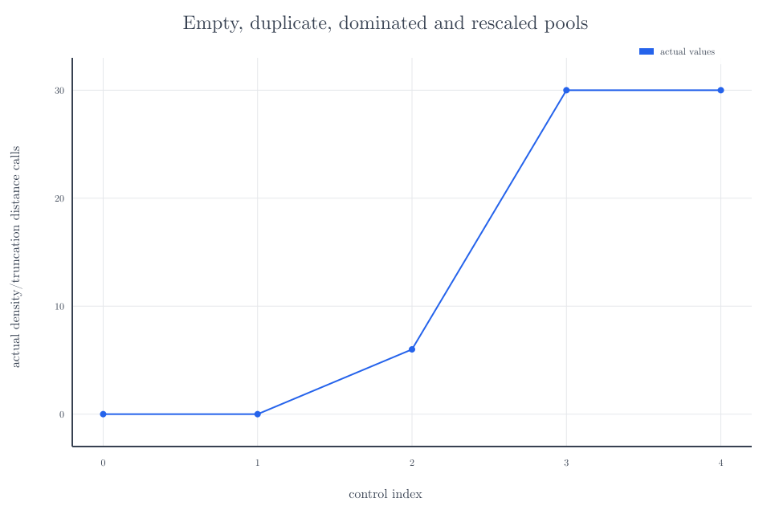
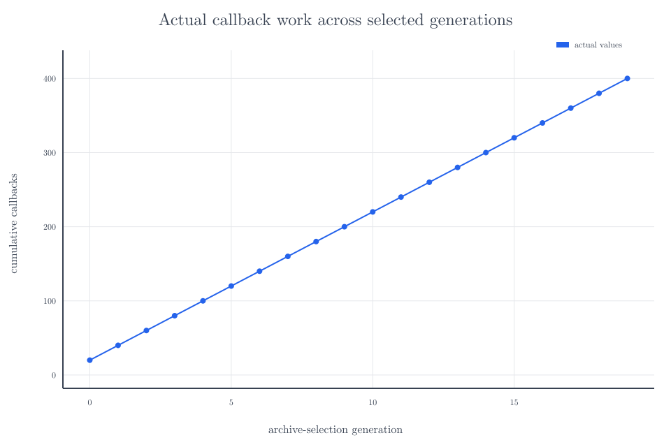

SPEA2: actual strengths, density and archive decisions
Abstract
Conflicting minimized objectives require a set of trade-offs rather than one best scalar value. SPEA2 combines dominance strength with neighbor density, retains an external archive and breeds new bounded candidates. We inspect actual scored pools and archive identities, retain the original six-point example and thirty-variable ZDT1 run, and state the finite-search limits.
Mechanism and mathematical scope
Strength S(i) counts other pool points dominated by i. Raw fitness sums strengths of every dominator, so raw0 identifies nondominated points. Density penalizes crowding:
The kth neighbor is one-based after excluding self. The old implementation used index k in that nonself list, selecting the k+1 neighbor; this report corrects that off-by-one and records the resulting seeded trajectory change. If the archive has room, dominated candidates fill by fitness. If too many raw-zero points remain, compare sorted neighbor-distance lists lexicographically and remove the most crowded point repeatedly. The captured victims and survivors are actual producing decisions.
All objectives are minimized and distances use their raw scales. Rescaling an objective can alter density and archive diversity even when dominance is unchanged. Each density stage needs quadratic pair work/storage; repeatedly rebuilding truncation distances can be quartic in pool size. SBX and polynomial mutation are canonical native operators, with an explicit local seed. A finite approximate front is not a proof of convergence.
A tiny actual producing history
The table and native concept diagram read the same producing execution. Every block below is a complete editable C++ program.
#include <dm/dm.hpp>
int main() {
namespace a = dm::algorithms;
namespace g = dm::graphics;
std::filesystem::create_directories("build");
auto r = dm::optim::spea2_select_trace({{0, 1}, {1, 0}, {1, 1}}, 2);
std::print("| actual pool index | objectives | strength | raw | density | fitness |\n| ---: | --- | " "---: | ---: | ---: | ---: |\n");
for (const auto &p : r.pool)
std::print("| {} | `{}` | {} | {} | {} | {} |\n", p.pool_index, p.f,
p.strength, p.raw, p.density, p.fitness);
std::print("\nActual selected `{}`, actual truncated `{}`.\n", r.selected,
r.truncated);
g::Diagram concept_diagram(48, 1100);
concept_diagram.node("n0", {0, 0}, "Three minimized objective points");
concept_diagram.node("n1", {5, 0},
std::format("{} actual dominance tests",
r.dominance_tests));
concept_diagram.node("n2", {10, 0},
std::format("Actual survivors {}", r.selected));
concept_diagram.edge("n0", "n1").edge("n1", "n2");
concept_diagram.save_svg("build/spea2_tiny.svg");
}| actual pool index | objectives | strength | raw | density | fitness |
|---|---|---|---|---|---|
| 0 | [0, 1] | 1 | 0 | 0.3333333333333333 | 0.3333333333333333 |
| 1 | [1, 0] | 1 | 0 | 0.3333333333333333 | 0.3333333333333333 |
| 2 | [1, 1] | 0 | 2 | 0.3333333333333333 | 2.3333333333333335 |
Actual selected [0, 1], actual truncated [].

The retained original experiment
#include <dm/dm.hpp>
int main() {
namespace a = dm::algorithms;
namespace g = dm::graphics;
std::filesystem::create_directories("build");
namespace o = dm::optim;
auto six =
o::spea2_select_trace({{.1, .9}, {.3, .4}, {.6, .2}, {.9, .1}, {.5, .6},
{.8, .5}}, 4);
std::print("| original point index | actual strength | raw | density | fitness |\n| ---: | ---: | ---: " "| ---: | ---: |\n");
for (const auto &p : six.pool)
std::print("| {} | {} | {} | {} | {} |\n", p.pool_index, p.strength,
p.raw, p.density, p.fitness);
o::ZDT1Objective problem(30);
o::SPEA2Options options;
options.population_size = 100;
options.archive_size = 100;
options.max_generations = 250;
options.seed = 1;
auto r =
o::SPEA2(options).optimize_run(problem, std::vector<double>(30, 0),
std::vector<double>(30, 1));
auto summary = o::zdt1_front_summary(r.front);
std::print("\n| original variables | population/archive | selection generations | actual callbacks | " "front points | mean vertical gap |\n| ---: | --- | ---: | ---: | ---: | ---: |\n| 30 | " "100/100 | 250 | {} | {} | {} |\n",
r.evaluations, summary.points, summary.mean_gap);
std::vector<double> x, y, tx, ty;
for (const auto &p : r.front) {
x.push_back(p.objectives[0]);
y.push_back(p.objectives[1]);
}
for (const auto &p : o::zdt1_front()) {
tx.push_back(p.objectives[0]);
ty.push_back(p.objectives[1]);
}
auto plot = g::RPlot::create();
plot.points(x, y, {37, 99, 235}, 4).lines(tx, ty,
"analytic g=1 Pareto reference",
{220, 38, 38}).title(
"Original ZDT1 settings: actual corrected-density archive").x_label(
"minimized f1").y_label("minimized f2");
plot.save_svg("build/spea2_original.svg");
}| original point index | actual strength | raw | density | fitness |
|---|---|---|---|---|
| 0 | 0 | 0 | 0.39393086773222363 | 0.39393086773222363 |
| 1 | 2 | 0 | 0.42362916600868245 | 0.42362916600868245 |
| 2 | 1 | 0 | 0.42362916600868245 | 0.42362916600868245 |
| 3 | 0 | 0 | 0.41454032309092265 | 0.41454032309092265 |
| 4 | 0 | 2 | 0.43173647025209283 | 2.4317364702520927 |
| 5 | 0 | 3 | 0.42362916600868245 | 3.4236291660086824 |
| original variables | population/archive | selection generations | actual callbacks | front points | mean vertical gap |
|---|---|---|---|---|---|
| 30 | 100/100 | 250 | 25000 | 100 | 0.0019199913475396626 |

Explicit controls
#include <dm/dm.hpp>
int main() {
namespace a = dm::algorithms;
namespace g = dm::graphics;
std::filesystem::create_directories("build");
namespace o = dm::optim;
const std::vector<std::vector<std::vector<double>> > pools{
{}, {{1, 1}}, {{0, 1}, {1, 0}, {1, 1}},
{{0, 1}, {.5, .5}, {1, 0}, {.5, .5}},
{{0, 100}, {.5, 50}, {1, 0}, {.5, 50}}
};
std::vector<double> x, y;
std::print("| control pool | actual selected indices | actual removed indices | distance calls |\n| " "---: | --- | --- | ---: |\n");
for (std::size_t i = 0; i < pools.size(); ++i) {
auto r = o::spea2_select_trace(pools[i], 2);
std::print("| {} | `{}` | `{}` | {} |\n", i, r.selected, r.truncated,
r.distance_calls);
x.push_back(i);
y.push_back(r.distance_calls);
}
auto plot = g::RPlot::create();
plot.lines(x, y, "actual values", {37, 99, 235}).points(x, y, {37, 99, 235},
4).title(
"Empty, duplicate, dominated and rescaled pools").x_label(
"control index").y_label("actual density/truncation distance calls");
plot.save_svg("build/spea2_controls.svg");
}| control pool | actual selected indices | actual removed indices | distance calls |
|---|---|---|---|
| 0 | [] | [] | 0 |
| 1 | [0] | [] | 0 |
| 2 | [0, 1] | [] | 6 |
| 3 | [0, 2] | [1, 3] | 30 |
| 4 | [0, 2] | [1, 3] | 30 |

Actual selected work and sensitivity
#include <dm/dm.hpp>
int main() {
namespace a = dm::algorithms;
namespace g = dm::graphics;
std::filesystem::create_directories("build");
namespace o = dm::optim;
o::ZDT1Objective problem(3);
o::SPEA2Options options;
options.population_size = 20;
options.archive_size = 10;
options.max_generations = 20;
options.seed = 1;
auto r =
o::SPEA2(options).optimize_trace(problem, std::vector<double>(3, 0),
std::vector<double>(3, 1));
std::vector<double> x, y;
std::print("| actual selection generation | callbacks so far | scored pool | actual retained indices | " "actual removed indices |\n| ---: | ---: | ---: | --- | --- |\n");
for (const auto &s : r.generations) {
std::print("| {} | {} | {} | `{}` | `{}` |\n", s.generation,
s.evaluations, s.pool.size(), s.selected, s.truncated);
x.push_back(s.generation);
y.push_back(s.evaluations);
}
auto plot = g::RPlot::create();
plot.lines(x, y, "actual values", {37, 99, 235}).points(x, y, {37, 99, 235},
4).title(
"Actual callback work across selected generations").x_label(
"archive-selection generation").y_label("cumulative callbacks");
plot.save_svg("build/spea2_work.svg");
}| actual selection generation | callbacks so far | scored pool | actual retained indices | actual removed indices |
|---|---|---|---|---|
| 0 | 20 | 20 | [8, 18, 19, 1, 12, 0, 9, 2, 14, 6] | [] |
| 1 | 40 | 30 | [4, 6, 7, 8, 10, 12, 13, 16, 20, 18] | [] |
| 2 | 60 | 30 | [0, 5, 6, 11, 19, 21, 22, 23, 24, 27] | [15, 16, 25] |
| 3 | 80 | 30 | [2, 3, 11, 15, 17, 23, 25, 26, 27, 28] | [12, 22, 8, 29, 5] |
| 4 | 100 | 30 | [1, 5, 13, 14, 16, 21, 22, 24, 28, 29] | [19] |
| 5 | 120 | 30 | [1, 6, 8, 11, 12, 18, 20, 23, 24, 27] | [15] |
| 6 | 140 | 30 | [3, 10, 12, 14, 15, 17, 19, 24, 25, 7] | [] |
| 7 | 160 | 30 | [0, 5, 6, 13, 15, 18, 19, 20, 23, 28] | [7, 9, 21, 8, 11, 12] |
| 8 | 180 | 30 | [0, 8, 9, 10, 20, 21, 23, 24, 25, 28] | [] |
| 9 | 200 | 30 | [3, 11, 15, 16, 17, 18, 21, 23, 25, 26] | [19, 12] |
| 10 | 220 | 30 | [1, 5, 15, 18, 19, 24, 25, 26, 27, 6] | [] |
| 11 | 240 | 30 | [2, 3, 12, 17, 20, 22, 23, 24, 26, 28] | [5, 10, 21] |
| 12 | 260 | 30 | [4, 8, 9, 14, 20, 21, 23, 24, 25, 29] | [6, 22] |
| 13 | 280 | 30 | [0, 13, 14, 18, 19, 22, 24, 25, 27, 29] | [17] |
| 14 | 300 | 30 | [1, 9, 10, 11, 12, 19, 21, 24, 27, 28] | [4, 29] |
| 15 | 320 | 30 | [1, 15, 16, 19, 21, 22, 23, 26, 27, 28] | [14, 20, 25, 24, 12, 6] |
| 16 | 340 | 30 | [1, 2, 8, 14, 17, 20, 22, 23, 25, 28] | [5, 12, 4, 21] |
| 17 | 360 | 30 | [1, 3, 4, 13, 15, 18, 21, 23, 27, 29] | [11, 6, 22, 20] |
| 18 | 380 | 30 | [1, 2, 7, 8, 15, 20, 22, 24, 28, 29] | [11, 18, 16] |
| 19 | 400 | 30 | [9, 11, 13, 17, 19, 20, 21, 22, 24, 25] | [12, 27, 2, 0, 1, 23, 29, 10, 18] |

API and interpretation
ZDT1 uses f1=x1 and f2=g(1-sqrt(f1/g)), with g=1+9*mean(x2..xn). The analytic front requires the other coordinates zero; observed signed vertical gaps summarize approximation only. Objectives must be finite and have consistent positive dimension. Bounds have finite strict spans, and rates/eta controls are checked. Zero generations retain historical initial callback evaluations but return an empty archive front. Fitness dominance counters exclude the separately filtered final front; all counters state their scope.
Reusable producers, fixtures and histories live in the canonical C++ library. Captured records own their values and do not come from a separate report replay. Selected counters and record/scalar policies are specified at their API boundaries; they are not peak-byte or wall-time budgets. Synthetic structural inputs are controlled fixtures for these mechanisms.
References
Verified in the shared ten-document batch: 67 scoped native cases and9 formatter
cases;20 directly instrumented ASan/UBSan cases;87 executable public
examples;402/402 full-file definitions across29 scopes;10 hovers;10569
independent records/108541 checks;frozen comparisons across all ten families
with density-rank, long-prefix arithmetic, initial residual and complete-input
corrections recorded;15 checkout/installed standalone headers and linked
ten-family consumer;40 executed programs and40 inspected figures with both
exports. Receipts: build/mepml-conversion/batch-364-373/.